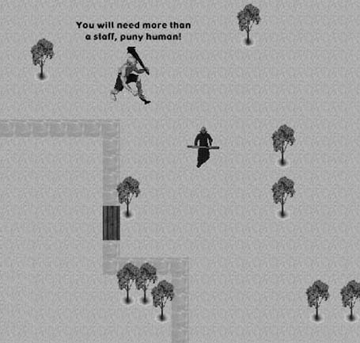
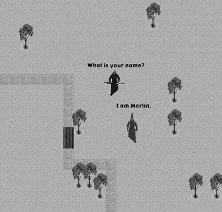

|
|
< Day Day Up > |
|
8.5 Scripting Verbal InteractionThe benefits of scripting go beyond just making an AI opponent more sophisticated and challenging. Many types of games incorporate intelligent behavior in ways that aren't meant to be a direct challenge to the player. A role-playing game, for example, might provide the player with a series of subtle hints meant to move the story along. Scripting is an excellent way to enable the game designer to create a compelling story without the need to alter the actual game program. Intelligent behavior can make a game more challenging, but verbal responses that are intelligent and appropriate to the situation can go even farther when creating an immersive environment for the player. Verbal interaction can range from helpful hints from a friendly nonplayer character to taunts from an adversary. Verbal interaction seems most intelligent and immersive when it relates to the current game situation. This means the game AI needs to check a given set of game parameters and then respond to them accordingly. For example, how a player is armed might be one parameter that can be checked. We can then have an adversarial AI character comment on how ineffective that weapon will be once combat starts. This seems more intelligent and immersive because it's not just a random taunt. It applies to the current game situation. It makes it seem as though the computer-controlled characters are aware of what's happening in the game. A quick example of how this script might look is shown in Example 8-9. Example 8-9. Verbal taunt script
If (PlayerArmed ==Dagger)
Say("What a cute little knife.");
If (PlayerArmed ==Bow)
Say("Drop the bow now and I'll let you live.");
If (PlayerArmed ==Sword)
Say("That sword will fit nicely in my collection.");
If (PlayerArmed ==BattleAxe)
Say("You're too weak to wield that battle axe.");
As Example 8-9 shows, knowing a bit about the current game situation can add an immersive effect to gameplay. This is much more effective than simply adding random general taunts. So, an important aspect of a scripting system is to enable the script writer to see what's happening inside the game engine. The more game elements the script can see, the better. Figure 8-2 shows a hypothetical game scenario in which an evil giant is chasing the player. In this case, the game AI is able to use unique elements of the game state to supply a taunt appropriate to the situation. In this case, we know that the adversary is a giant, the player is a human, and the player is armed with a staff. Figure 8-2. Giant tauntExample 8-10 shows how the game AI might can be an appropriate taunt during a battle between a computer-controlled giant and a player-controlled human. In a real game you probably would want to add multiple responses for each given situation and then randomly select among them. This would help prevent the responses from becoming repetitive and predictable. Example 8-10. Giant taunt script
If (Creature==Giant) and (player==Human)
begin
if (playerArmed==Staff)
Say("You will need more than a staff, puny human!");
if (playerArmed==Sword)
Say("Drop your sword and I might not crush you!");
if (playerArmed==Dagger)
Say("Your tiny dagger is no match for my club!");
end
Of course, this type of scripting isn't limited to adversarial characters that are out to kill the players. Benevolent computer-controlled characters can use the same techniques. This can help the script writer create an engaging and immersive plot. Example 8-11 shows how a script helps construct a plot and guide the player actions toward the game goals. Example 8-11. Benevolent AI script
If (Creature==FriendlyWizard)
begin
if (playerHas==RedAmulet)
Say("I see you found the Red Amulet.
Bring it to the stone temple
and you will be rewarded.");
end
As Example 8-11 shows, a vital piece of information concerning where the amulet should be placed won't be revealed to the player until the amulet is found and the player confronts the friendly wizard. The previous script examples show how game AI can respond in a given situation, but it's also sometimes necessary for game characters to have some type of verbal interaction with the player. This could be benevolent characters meant to provide the player with helpful information, or perhaps a less-than-honest character meant to intentionally mislead the player. In this type of scenario, the player needs some mechanism to input text into the game. The game engine then makes the text strings available to the script system, which analyzes the text and provides an appropriate response. Figure 8-3 shows how this might appear in an actual game. Figure 8-3. MerlinIn the case of Figure 8-3, the player would type in the text "What is your name?" and the scripting system would return the text "I am Merlin." Example 8-12 shows a basic script that you could use to accomplish this. Example 8-12. Basic "What is your name?" script
If Ask("What is your name?")
begin
Say("I am Merlin.");
end
Of course, Example 8-12 does have one serious flaw. It works only when the player types in the exact text of the question as it appears in the script. In reality, you can form a question in many ways. For example, what happens if the player enters one of the lines of text shown in Example 8-13? Example 8-13. Example player inputWhat's your name? Whats your name? What is your name. What is thy name? What is your name, Wizard? Hello, what is your name? As you can see, the script in Example 8-12 would fail for all the questions shown in Example 8-13, even though it's quite obvious what's being asked. Not only can you ask a question in many ways, but we also have to consider the possibility that the player might not form the question in a correct manner. In fact, you can see that one of the example questions ends in a period rather than a question mark. We could have strict requirements for the player-entered text, but it would have the effect of removing the player from the immersive effect of the game whenever he made the inevitable minor error. One alternative to checking each literal text string is to create a language parser to decipher each sentence to determine exactly what is being asked. For some games a sophisticated language parser might be appropriate; however, for most games there is a simpler approach. As you saw in Example 8-13, you can form the same question in many ways, but if you'll notice, they all have something in common. They all contain the words "what" and "name." So, instead of checking for each literal text string, we can simply search for and respond to particular keywords. In this case, the scripting engine simply checks for the presence of given keywords within a text string. As Example 8-14 shows, the script is checking for the presence of two keywords in the player-entered text. Using this approach, the script responds correctly to every question in Example 8-13. Example 8-14. Keyword scripting
If (Ask("what") and Ask("name") )
begin
Say("I am Merlin.");
end
Now that we've shown you how to write a typical script to check player input for a given set of keywords, let's look at how the actual game engine checks player input for a given keyword. Example 8-15 shows how to do this. Example 8-15. Searching for keywords
Boolean FoundKeyword(char inputText[kStringLength], char
searchFor[kStringLength])
{
char inStr[kStringLength];
char searchStr[kStringLength];
int i;
for (i=0;i<=strlen(inputText);i++)
{
inStr[i]=inputText[i];
if (((int)inStr[i]>=65) && ((int)inStr[i]<=90))
inStr[i]=(char)((int)inStr[i]+32);
}
for (i=0;i<=strlen(searchFor);i++)
{
searchStr[i]=searchFor[i];
if (((int)searchStr[i]>=65) &&
((int)searchStr[i]<=90))
searchStr[i]=(char)((int)searchStr[i]+32);
}
if (strstr(inStr,searchStr)!=NULL)
return (true);
return (false);
}
Example 8-15 shows the actual code in the game engine that is invoked whenever the "Ask" function is called from the game designer's script. This function takes two parameters: inputText, which is the line of text the player entered, and searchFor, which is the keyword we want to search for. The first thing we do in this function is to convert both strings to all lowercase. Like many programming languages, C and C++ are case-sensitive. A string containing the text "Name" is not equal to a string containing the text "name." We can't rely on the player always using capitalization consistently or properly. The simplest solution is to convert all strings to lowercase. That way, it doesn't matter if the player enters all uppercase, all lowercase, or some combination. Once we have two lowercase strings, we call the C function strstr to compare the text strings. The strstr function searches inStr for the first occurrence of searchStr. If searchStr is not found in inStr, a null pointer is returned. |
|
|
< Day Day Up > |
|